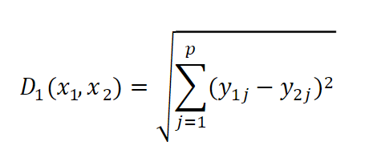

Código
library(vegan)
library(factoextra)
library(kableExtra)library(vegan)
library(factoextra)
library(kableExtra)En el modo Q, los coeficientes miden la distancia o similitud entre parejas de objetos (ej. distancia euclídea o el coeficiente de similitud de Jaccard). Estos alcanzan su valor máximo cuando los objetos son completamente distintos o cuando son iguales a cero.
Los coeficientes se pueden clasificar en:
Las distancias métricas son usadas para datos cuantitativos, bajo las siguientes propiedades
Esta última propiedad se conoce como el axioma del triángulo no equilátero, indica que la suma de dos lados de un triángulo en un espacio euclídeo es necesariamente iguales o mayor que el tercer lado.
En el segundo grupo se encuentran las simétricas las cuales no cumplen el axioma (4) por lo que los autovalores se afectan en una matriz de covarianza. Legendre y Legendre (1983) afirman que algunas de las medidas de distancia obtenidas por medio del complemento de las similitudes S1-S23 no siguen la cuarta propiedad de las medidas métricas, ya que no satisfacen el axioma del triángulo.
Estas pueden presentar valores negativos violando la propiedad de positividad de una distancia métrica.
La distancia euclidiana entre dos sitios es representa la longitud del vector que conecta los sitios. Es la distancia más conocida entre las métricas pudiendo calcularse por medio del teorema de Pitágoras (Legendre y Legendre, 1983). Los objetos son posicionados de acuerdo con los valores que toma cada variable en un espacio p-dimencional. Esto es, para datos continuos y respecto a cualquier atributo dado, la distancia euclidiana entre los datos de dos muestras es |yi1 - yi2| donde yi1 es el valor de una muestra y yi2 es el valor de la segunda muestra (Clifford y Stiphenson, 1975). Para n muestras. La distancia euclidiana no tiene límite superior, se incrementa según aumenta el número de variables. Su valor solo depende de la escala de cada variable, aunque también se pueden cambiar la escala de algunas variables obteniendo medidas de distancia (Legendre y Legendre, 1983). Si existen solo existen dos variables esta expresión llega a ser la medida de la hipotenusa del ángulo recto del triángulo (Legendre y Legendre, 1983).

Figura 1 Donde X1, es la muestra 1; X2 es la muestra 2; yi1 es el valor de la variable en la muestra 1; yi2 es el valor de la variable en la muestra 2 y n es el número de variables (Rodríguez-Barrios, J. 2023).

Figura 2 Donde XQ y YQ son las cordenadas (x,y) del punto Q; XP y YP son las cordenadas (x,y) del punto P.
La distancia euclidiana como una medida de la semejanza entre muestras está fuertemente impactada por la diferencia entre las abundancias de especies, esto puede causar una paradoja: dos muestras sin ninguna especie en común puede llegar a tener una distancia más pequeña que dos muestras que contengan la misma especie (Legendre y Legendre, 1983). Por lo tanto, la distancia euclidiana no debe ser utilizada cuando se trabaja con comparaciones basadas en la abundancia de especies (Legendre y Legendre, 1983).
El doble cero puede contribuir a la reducción de la distancia, esto puede evitarse cuando se trabaja con variables de abundancia de especies, mientras que en el caso de las variables físicas el doble cero puede ser una base validad para la comparación de muestras. Aunque la distancia Euclidiana es la más conocida entre las distancias métricas, no es apropiado utilizarla en análisis de datos biológicos como la abundancia, en general en la naturaleza las relaciones lineales no son muy comunes por lo es necesario aplicar trasformaciones sin embargo en muchos casos no son efectivas. En los datos biológicos es normal encontrar una gran cantidad de ceros (especies no encontradas en determinados sitios), el problema es que la distancia Euclidiana incrementa la similitud entre comunidades que presentan ceros para la misma especie. En este caso, el tener un valor de cero puede deberse a varias razones, por ejemplo puede ser que aunque la especie ocurre en ese lugar no pudo ser muestreada por otro lado cuando se trabaja con datos abióticos normalmente el cero implica la ausencia de alguna variable , por ejemplo tener cero mg de un contaminante es una información valida.
# Crear un data frame con 6 especies
library(kableExtra)
datos <- data.frame(
sp1 = c(1,0,0),
sp2 = c(1,1,0),
sp3 = c(0,1,0),
sp4 = c(0,1,0),
sp5 = c(0,1,1),
sp6 = c(0,0,1)
)
rownames(datos) <- LETTERS[1:3]
# Titulo del data frame
kable(datos, caption = "Efecto del doble cero")| sp1 | sp2 | sp3 | sp4 | sp5 | sp6 | |
|---|---|---|---|---|---|---|
| A | 1 | 1 | 0 | 0 | 0 | 0 |
| B | 0 | 1 | 1 | 1 | 1 | 0 |
| C | 0 | 0 | 0 | 0 | 1 | 1 |
# Distancia euclidia para las 6 especies
vegdist(datos, "euclidean") A B
B 2
C 2 2Según la matriz de distancia las 3 comunidades son muy similares. En el caso de la comunidad A y C no se presenta ninguna especie en común sin embargo la matriz indica una alta similaridad entre ellas esto debido al efecto del doble cero.
Otra situación que es muy común con los datos de abundancia es que se presenten especies muy dominantes. La distancia euclídea eleva al cuadrado las abundancias, en consecuencia, incrementa el efecto de las especies dominantes.
# Data fren con 3 especies
library(kableExtra)
datos1 <- data.frame(spp1=c(0,1,0),spp2=c(1,0,8),
spp3=c(1,0,7))
rownames(datos1) <- LETTERS[1:3]
# Titulo del data frame
kable(datos1, caption = "Efecto de la abundancia")| spp1 | spp2 | spp3 | |
|---|---|---|---|
| A | 0 | 1 | 1 |
| B | 1 | 0 | 0 |
| C | 0 | 8 | 7 |
# Distancia euclidia para las 3 especies
library(vegan)
vegdist(datos1, "euclidean") A B
B 1.732051
C 9.219544 10.677078Las comunidades A y C comparten dos especies mientras que A y B, B y C comparten tan solo una especie, sin embargo, la distancia entre A y B es menor (1.73) que la distancia entre A y C (9.21) debido al efecto de la abundancia. En otras palabras, dos comunidades pueden parecer más disimiles de lo que en realidad son cuando existe una gran diferencia en la abundancia de las especies que comparten.
Legendre y Legendre (1983) mencionan que en el caso de las abundancias de especies se han propuesto diversas modificaciones a la distancia euclidiana para tratar de solucionar la desventaja que este presenta.
La Distancia-Bray-Curtis se refiere a la diferencia total en la abundancia de especies entre dos sitios, dividido para la abundancia total en cada sitio. Esta distancia se centra en la abundancia relativa de las especies, además los valores que esta presenta va de 0 a 1 (Bray y Curtis, 1957; Espinosa, 2019).
Algunas ventajas de usar Bray-Curtis son las siguientes:
Existen otras formas de medir distancias entre dos localidades. En ecología una de las distancias más utilizada es la de Bray-Curtis, esta distancia es el opuesto del porcentaje de similitud. Calculada de la siguiente forma:

Dónde ai representa la abundancia o presencia de una especie i en el conjunto de datos; bi, representa la abundancia o presencia de una especie i en el conjunto de datos; Σ, representa la suma de todos los valores para cada especie en ambos conjuntos de datos.
La distancia Bray-Curtis resulta más intuitiva porque las especies comunes y raras tienen pesos relativamente similares, mientras que la distancia euclidiana depende de las especies más abundantes. Esto sucede porque las distancias euclidianas se basan en diferencias al cuadrado, mientras que Bray-Curtis utiliza diferencias absolutas.
insectos <-read.csv2("Insectos.csv",row.names=1)d.euclid <- vegdist(scale(insectos[(4:9)]), method="euclidean")d.bray <- vegdist((insectos[(4:9)]), method="bray")A1 <- vegdist(insectos[4:8], method="bray")
fviz_dist(dist.obj = d.bray, lab_size = 10, order = FALSE) +
theme(legend.position = "none")
Figura 3 En este caso encontramos muchas variaciones entre las observaciones, por ejemplo entre la 11 y la 15 en el eje x-y, encontramos un parche rojo que evidencia una gran similitud de los datos, contrario al parche que se forma entre las observaciones de la 20 hasta la 18 en el eje x, asi mismo de la 19 hasta la 17 en el eje y, dónde la disimilitud es mayor, lo que nos indica que estas observaciones a pesar de no corresponder todas a la misma cuenca, muestran similitud entre ellos.
A <- vegdist(insectos[4:8], method="euclidea", order = 'AOE')
fviz_dist(dist.obj = d.euclid, lab_size = 10, order = FALSE) +
theme(legend.position = "none")
En la Figura 4 podemos observar patrones entre las cuencas. Por ejemplo, entre la observacion 6 y la 18 en los ejes x-y, sumado a esto, encontramos un parche rojo que evidencia una gran similitud de los datos que corresponden a una misma cuenca, resultado que es esperado debido a que contemplan las mismas condiciones. De igual manera encontramos un parche que se forma entre las observaciones 3-17 tanto el el eje x como en el y, dónde la disimilitud es mayor, perteneciendo a una misma cuenca. En general los resultados evidencia patrones de similitud y disimilitud que van de acuerdo con las observaciones realizadas por cuenca, lo que nos indica que si hay una relación entre el área y las variables registradas en el estudio.
Tomaron el género Chirostoma de peces endémicos de la mesa central de mexico el cual cuya diversificación se da de dos maneras, por procesos de especiación alopátrica en ambientes loticos y por diversificación intralacustre debida a especiación simpátrica. La intención de este articulo es validar la segunda hipótesis evaluando las diferencias osteológicas de la mandíbula de unas especies de este género (C. attenuatum, C. grandocule, C. estor y C. patzcuar).
Luego de la identificación de 20 individuos adultos de cada una de las especies a los cuales se les tomaron fotografías de los huesos desarticulados y se midieron cada uno de los huesos utilizando un vernier electrónico con una precisión de 0.01 mm. Para la comparación de estos se realizó un análisis de agrupamiento utilizando valores sacados de una matriz de distancia euclidiana para realizar un dendograma el cual fue estructurado con el método de unión media no ponderada (UPGMA) con la intención de observar las semejanzas entre las especies.

Tomado de: Soria y Paulo 2005.
El análisis muestra 4 grupos claramente formados. Que son las especies con la se estaban trabajando, El primero contiene a los individuos de C. grandocule, que se relacionan con un valor de disimilitud de 62.8 con los de C. patzcuaro. Ambos taxones, a su vez, se unen con el tercer grupo formado por los ejemplares de C. estor, con un valor de 67.2. El taxón que a continuación se relaciona es C. attenuatum, unido con 80.8 unidades de disimilitud (Fig. 2).
En este articulo buscaron demostrado cuantitativamente los cambios de magnitud y dirección en las estructuras coralinas de cuatro arrecifes del Caribe colombiano, dos del área de Santa Marta: Punta Betín (PB) e isla Morro Grande (MO) y dos en el Parque Nacional Natural Tayrona (PNNT): ensenada de Granate (GR) y bahía Gayraca (GA). Entre 1989 y 2002.
Con de objetivo de comparar la estructura de los ocho arrecifes en el pasado vs presente (4 en el pasado y 4 en el presente), se realizó un análisis exploratorio de clasificación normal mediante un cluster de similaridad de Bray-Curtis, utilizando la técnica de ligamiento de promedio de grupos.

Tomado de: Martines y Acosta 2005.
Encontraron que en general la estructura de las comunidades para todos y cada uno de los arrecifes mantuvo una similaridad superior al 50 %, la estructura de la comunidad coralina en el arrecife de Morro Grande fue la que menos cambió en el tiempo, seguida por las comunidades de Punta Betín y Granate. Por el contrario, la estructura de la comunidad coralina en Gayraca fue la que presentó un mayor cambio en el tiempo ya que no se agruparon los arrecifes de 1992 y 2002 entre sí, sino que la estructura de la comunidad coralina de Gayraca en 1992 resultó más similar a Punta Betín y Morro; y en el 2002 a Granate.
Bray, JR y Curtis, JT (1957) Una ordenación de las comunidades de los bosques de tierras altas del sur de Wisconsin. Monografías ecológicas, 27, 325-349.
http://dx.doi.org/10.2307/1942268
Cajal, A. Distancia euclidiana: concepto, fórmula, cálculo, ejemplo. lifeder. Recuperado el 03/05/2024 a partir de: https://www.lifeder.com/distancia-euclidiana/
Espinosa, C.I. 2022. Capítulo 4 Distancias entre sitios. Similitud de Comunidades biológicas. https://ciespinosa.github.io/Similitud/distancias-entre-sitios.html#distancia-euclidiana
Martínez, S., & Acosta, A. (2005). Cambio temporal en la estructura de la comunidad coralina del área de Santa Marta-Parque Nacional Natural Tayrona (Caribe colombiano). Boletín de Investigaciones Marinas y Costeras-INVEMAR, 34(1), 161-191.
Rodríguez-Barrios, J. (2022). Análisis de datos ecológicos y ambientales: aplicaciones con programa R. Ediciones Díaz de Santos.https://www-ebooks7-24-com.biblioteca.unimagdalena.edu.co/?il=26489
Rojas-Jimenez, K. 2022. Capítulo 6 Análisis de Cluster, Mapas de Calor y Análisis Multivariados. Ciencia de Datos para Ciencias Naturales. https://bookdown.org/keilor_rojas/CienciaDatos/an%C3%A1lisis-de-cluster-mapas-de-calor-y-an%C3%A1lisis-multivariados.html
Soria-Barreto M. y J. Paulo-Maya. 2005. Morfometría comparada del aparato mandibular en especies de Chirostoma (Atheriniformes : Atherinopsidae) del Lago de Pátzcuaro, Michoacán, México. Hidrobiológica 15 (2 Especial): 161-168.